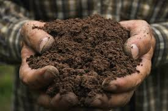
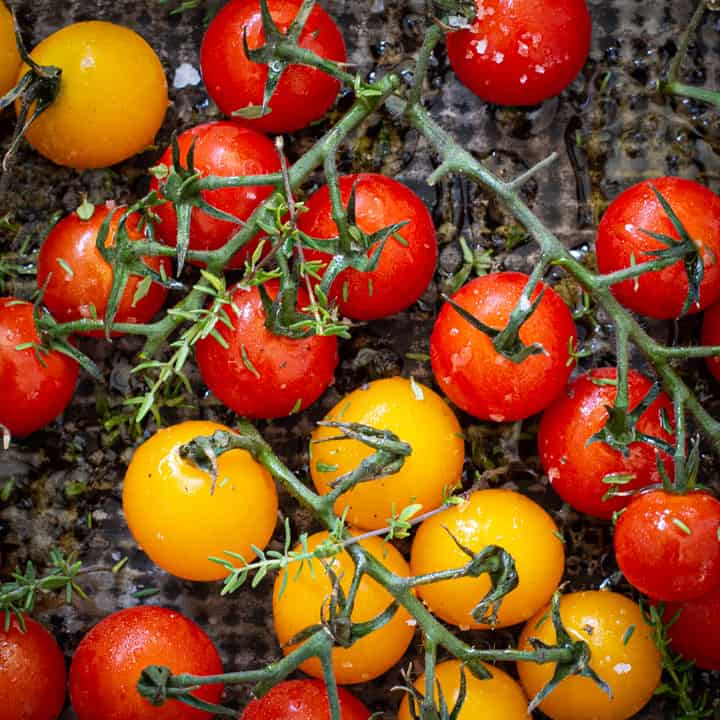

🪴Hello from the High Desert
I didn't grow up a gardener. For most of my life, plants were things that happened to other people — people with green thumbs and patience and mud on their knees. That changed the summer before I left on my mission when I decided to plant a small vegetable garden in my parents' backyard. I had no idea what I was doing, but I was determined to grow something — anything — in the dry, alkaline soil of Utah.
That first season was humbling. I planted tomatoes too early, lost a row of carrots to some invisible enemy underground, and watered everything either too much or not at all. But somewhere between the failures, a few things actually grew, and that was enough. I was hooked.
This site is my love letter to Utah gardening — the challenges, the surprises, and the deep satisfaction of eating something you grew yourself in a place where the soil is alkaline, the summers are brutal, and the last frost date is basically a suggestion.
🏔️Why Utah Is Both a Challenge and a Gift
Let's be honest: Utah is not exactly famous for its garden-friendliness. We're semi-arid. Our soil is often heavy clay or so alkaline that plants struggle to absorb nutrients. We can get frost well into May and again in September. The summer sun is genuinely ferocious.
And yet — Utah produces some of the most incredible produce I've ever tasted. The intense sun and cool nights concentrate sugars in tomatoes and stone fruit. The dry air means far fewer fungal problems. Peaches from Utah's Wasatch Front are legitimately world-class. Once you learn to work with the desert rather than against it, something clicks.

🌾Getting Started: My Step-by-Step Approach
Everyone's garden is different, but here's the framework I've settled into after several seasons. It's an ordered process with lots of room for improvisation inside each step.
-
Test and amend your soil
- Get a soil test from your local USU Extension office — it's cheap and eye-opening
- Add sulfur if pH is too high (above 7.5 is common in Utah)
- Mix in compost generously — at least 3–4 inches worked in
- Consider raised beds with purchased soil if your native soil is extremely compacted clay
-
Choose the right plants for your zone and microclimate
- Most of Salt Lake Valley and Utah Valley are Zone 7a or 7b — check the map below!
- Look for short-season varieties of tomatoes and peppers (under 70 days)
- Cool-season crops (peas, lettuce, kale) thrive in spring and fall
- Native plants and drought-tolerant perennials are your friends
-
Plan your watering strategy before you plant
- Drip irrigation is far superior to overhead watering in Utah's dry heat
- Water in the early morning to minimize evaporation
- Deep, infrequent watering builds stronger root systems
-
Watch your frost dates like a hawk
- Average last spring frost in SLC: around May 3rd (but be ready for surprises)
- Average first fall frost: around October 15th
- Use row cover or old bedsheets to protect tender transplants from late frosts
-
Keep records and iterate every season
- A simple notebook is enough — note what you planted, when, and how it did
- Document what varieties surprised you
- Track water use and weather events

🎬Watch & Learn: Utah Vegetable Gardening Tips
One of the best resources I've found is Utah State University Extension, which produces videos specifically about gardening in our climate. This one covers planning a vegetable garden in Utah — it's practical, local, and genuinely helpful for beginners and experienced gardeners alike.
🗺️Know Your Zone: USDA Plant Hardiness Map
Before you plant anything, it pays to know your hardiness zone. The USDA Plant Hardiness Zone Map divides the country into zones based on average annual extreme minimum winter temperatures. Most of the Salt Lake Valley falls in Zone 7a or 7b, while mountain valleys like Park City sit in Zone 5 or 6. Higher elevation communities like Cedar City are around Zone 6a.
The interactive visualization below (from Tableau Public) shows the USDA Growing Zones across the United States. Find your area and you'll have a clearer idea of which perennials will survive your winters and which plants are likely to thrive.

📸From the Garden
A few snapshots from my gardening journey. Every season looks a little different — different failures, different triumphs, always something unexpected.

